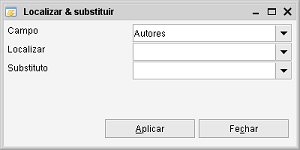
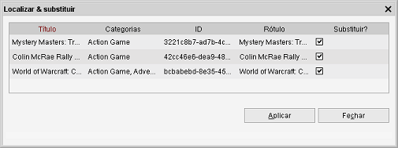

Caminho de menu: Ferramentas > Localizar & substituir
A funcionalidade Localizar & substituir pode ser acedida através do menu do clique com o botão direito na vista.

Esta funcionalidade permite-lhe substituir rapidamente parte de um valor de todos os itens num módulo com um novo valor.
Pode alterar rapidamente uma referência que criou para um item para outra referência (alterar a categoria X para a
categoria Y, mantendo as outras categorias inalteradas) ou substituir texto or outro texto.
A funcionalidade Localizar & substituir primeiro mostra-lhe uma pré-visualização antes de aplicar
as alterações (ainda pode optar por cancelar, neste ponto).
-
Campo:
seleccione o campo onde quer substituir valores
-
Localizar:
introduza/selecione o valor a substituir.
-
Substituir por:
introduza/selecione o valor de substituição
Pré-visualização
Após definir os valores corretos e clicar em Aplicar, é-lhe mostrada uma pré-visualização.

Aqui pode ver exatamente o que será alterado. E ainda tem a oportunidade de excluir itens do processo de substituição,
desmarcando as caixas correspondentes.